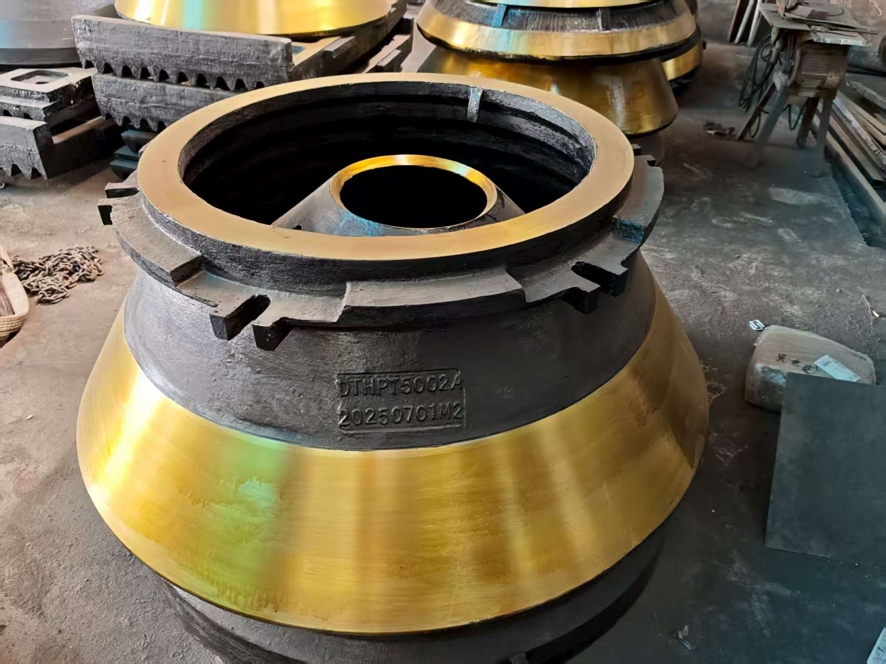

Данные RFQ
Подтвердите модель, название детали, reference number, чертеж или фото перед расчетом.
Wear parts
Mantles, bowl liners и concaves для вторичного, третичного и мелкого дробления.

Подтвердите модель, название детали, reference number, чертеж или фото перед расчетом.
Проверьте материал, casting или machining route, размеры и точки контроля.
Согласуйте export packing, labels, packing photos, Shanghai Port или forwarder покупателя.
MOQ может начинаться от 1 pc. Возможны mixed orders и срочные maintenance RFQs.
Заявление о совместимости
Metso, Nordberg, Sandvik, Barmac и другие бренды используются только для идентификации совместимости. XCT Mining является независимым aftermarket supplier, не authorized dealer, distributor или affiliate этих брендов.
Укажите модель дробилки, название детали, reference number, чертежи или фото, материал, количество, страну назначения и нужный срок.